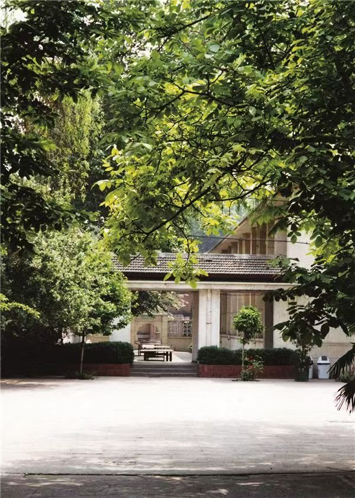
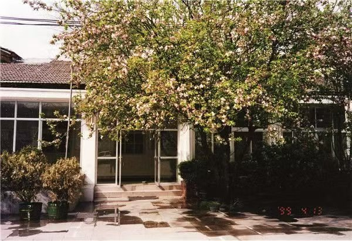
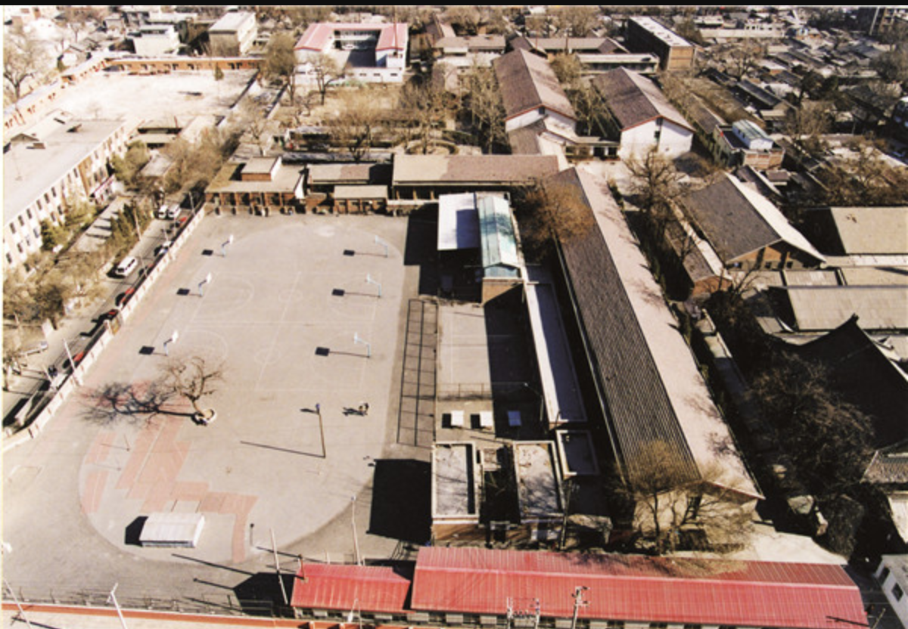
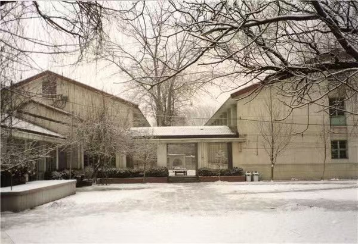

A cinematic tribute to the alumni of Beijing No.8 — the hallways, the laughter, and the bonds that time cannot erase.

"We did not know we were making memories. We just knew we were having fun." — Winnie the Pooh
Beijing No.8 Middle School is not merely a place where lessons were learned and exams were taken. It is a crucible of youth — a space where identities were forged in the fire of adolescent uncertainty, where friendships were sealed with a handshake or a shared secret after lights-out.
For generations of alumni, the school represents something larger than education: it is a shared origin story. The same corridors walked by different classes, the same trees that watched us grow, the same bell that marked the end of one chapter and the beginning of another.
This website is a living archive — a place where memories are not preserved in amber but kept alive through the voices of those who lived them. Every photograph, every story, every fragment of recollection adds another thread to the tapestry of our collective past.

Beijing, 1949. Plane tree leaves carpeted Chang'an Avenue. A group of teenagers, bags slung over their shoulders, wandered through the hutongs and stepped through the gates of No. 8 Middle School. They didn't know that this single step would bind their names into the same story.
The desks still smelled of fresh-cut wood. The first word written on the blackboard was the teacher's name. No one could have guessed that decades later, what we'd miss most were the most ordinary afternoons — sunlight spilling through the window onto open textbooks, someone dozing off, someone passing notes.
That was the first page of our story. And even now, when I turn back to it, the air still tastes sweet.

The moment the bell rang, the whole building shook. Footfalls poured through the hallways like a tide, surging toward the field. Some chased basketballs, some jumped rope, some leaned against the wall in the sun — pretending to read, really watching the world go by.
We chased the wind on the track, stifled laughter in class, drew caricatures of teachers on the blackboard, and carved names on desks that we'd never dare say out loud. We had nothing back then, and yet we felt we owned the entire world.

Chalk dust settled on the teacher's shoulders while cicadas screamed outside. In math class, a note slid across the aisle: "Corner store after school?" It was the most urgent matter in the world.
We memorized ancient poetry, solved countless equations, but never learned how to say goodbye. Graduation day taught us that the hardest question was never on the exam paper.
In the graduation photo, everyone smiled so hard it hurt — as if smiling loud enough could keep goodbye from coming. The teacher said, "Come back and visit sometime," voice cracking. A girl in the front row lowered her head. Someone started clapping, and inside the applause, there were tears.
We hurled our caps into the sky and thought that was the end. It took years to understand: it was actually the beginning of another story — a story about missing, one we'd tell for the rest of our lives.
Some people we never saw again after graduation. But every time we hear that song, smell chalk dust, or pass by a school, our hearts are yanked back to that summer in an instant.
Years passed. Life carried us far apart. But some bonds don't break — they just wait.
Years later, we sat together again.
Hair turned gray, but the smiles never changed.
We hope you've been well
For everything you've done for the alumni of No. 8.
Because of you, these memories were not taken by time.